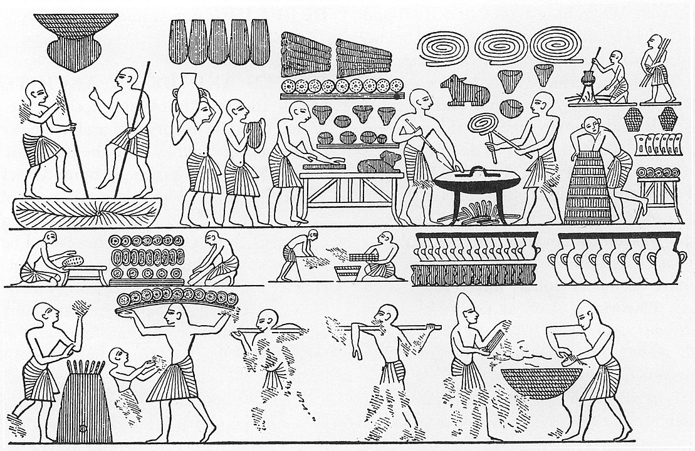

Le pain que nous consommons aujourd’hui résulte d’un
long cheminement agricole, technologique et gastronomique.
L’histoire du pain commence dès le Paléolithique supérieur.
Préhistoire
Des traces de pain sans levain ont été trouvées sur plusieurs sites datant
de 30 000 av. J.-C. : des grains d'amidon provenant de rhizomes de roseau
à massette et de fougère ont été identifiés sur des pierres assimilées à
des pilons et des mortiers. Ces rhizomes étant toxiques, l'étude suggère
que ces racines étaient pelées, broyées, puis cuites1.
Au Moyen-Orient, il est très probable que le pain ait été fabriqué avant
l'apparition de l'agriculture. Des fouilles à Çatal Höyük (actuelle
Turquie) montrent que, dans cette région au moins, le pain est apparu
avant cette dernière, et même avant la poterie. Il était cuit, agrémenté
de graines d'herbe de Sainte-Sophie, plus ancienne preuve de l'usage de
condiments2. Encore plus anciens, les restes d'un pain plat de céréales
sauvages, cuit il y a 14 400 ans sur le site natoufien de Shubayqa 1, ont
été découverts en 2018 au nord-est de l'actuelle Jordanie3,4.
Au début de l’agriculture vers 8000 av. J.-C., dans la région du Croissant
fertile, l'amidon provient essentiellement de grains de céréales. Au cours
de l’Antiquité, avec l’avènement des civilisations méditerranéennes
(sumérienne, égyptienne, grecque et romaine), l'histoire du pain devient
intimement mêlée à l'évolution des outils, comme la meule à grains.
Antiquité
Egypte
On attribue généralement l'invention du pain au levain aux Égyptiens
alors que, des siècles plus tard, les Romains se nourrissaient encore
de bouillie5. Grands observateurs de la nature, les Égyptiens avaient
compris qu'ils pouvaient fabriquer du pain en mélangeant du grain
écrasé, ou moulu, à l'eau du Nil, particulièrement riche en limons,
ceux-ci renfermant des agents de fermentation utilisés encore trois
millénaires plus tard. Cette découverte — laisser la pâte en attente,
livrée à l'action des germes, puis oser la cuire —, donna aux
habitants de la vallée du Nil un ascendant considérable sur les
peuples mangeurs de bouillie et de galette5.

Scène de fabrication du pain sur la tombe de Ramsès III
Les vestiges les plus reculés de pain remontent à l'époque
prédynastique. Tout au long de l'histoire, les anciens Égyptiens ont
placé des provisions dans les tombes pour assurer au mort sa subsistance
dans l'au-delà. Les nécropoles de l'époque gerzéenne (-3650, -3400) ont
conservé des restes de pain levé (Peters-Destéract6, 2005). Un repas
funéraire, bien conservé dans la tombe Saqqarah 3477 de la deuxième
dynastie (-2850, -2647), contenait une miche de pain triangulaire, faite
de blé emmer7. Dans la tombe de Kha, à Deir el-Médineh (XVIIIe dynastie,
-1550, -1292), on a trouvé un échantillonnage presque complet des pains
utilisés à l'époque. « Ils sont de forme ovale, rebondis, à la croute
luisante comme s'ils étaient sortis hier du four… Sont présents ceux de
forme circulaire, plus ou moins aplatis, comme les pains actuellement en
usage en Égypte et d'autres formes variées imitant aussi des éventails,
des vases et des animaux comme le petit pain représentant une gazelle
les pattes liéesN 1. »
Si ces vestiges sont des témoignages directs précieux du savoir-faire
égyptien, les bas-reliefs et les fresques nous apprennent beaucoup plus
sur les techniques de broyage du grain, du tamisage, de la préparation
de la pâte au levain et de sa cuisson6. Par exemple, la légende d'une
scène de boulangerie appartenant à un mastaba de Giza, dans laquelle la
boulangère interpelle son compagnon, préposé au chauffage des fours, en
ces mots : « Fais que ça chauffe bien, car la pâte a reçu le heza. » Il
semble que heza, après s'être appliqué au levain, ait désigné par la
suite la pâte levée.
Mésopotamie
En Mésopotamie, les galettes d'une pâte non levée sont cuites en les
appliquant sur les parois brûlantes du four. L'épopée de Gilgamesh
évoque la figure du boulanger qui pétrit, pour la déesse, « le pain cuit
sous la cendre ». Le pain au levain ne fait son apparition qu'au cours
du premier millénaire avant notre ère8. Sa préparation plus longue et
plus délicate en fait un mets réservé pour certaines occasions.
Les Sumériens consommaient une variété impressionnante de biscuits
(ni.har.ra) et de galettes, à base de pâte à pain levé. Prêtresses et
scribes faisaient des libations et des sacrifices en offrant du pain aux
divinités9. Plus de 200 variétés de « pains » ont été enregistrées dans
un recueil de tablettes (Benno Lansberger) — selon les farines, les
modes de pétrissage, les ingrédients (avec pistaches et figues sèches,
raisins secs, etc.), cuissons et présentations.
Grèce
Les Grecs développent le métier de boulanger et confectionnent plus de
70 variétés de pain, en utilisant pour faire lever la pâte des levures
issues du vin et conservées en petites amphores. Vers le début du ve
siècle av. J.-C., ils inventent le moulin à trémie d'Olynthe qui soulage
le travail des meuniers.
Pour les Romains aussi, le pain est, avec la bouillie de céréales,
l'aliment de base. Ils reprennent le mode de fabrication grec à base de
levure provenant de moût de vendange et améliorent le pétrissage. Pour
faire croire aux Gaulois assiégeant la ville qu'ils ne pourraient la
réduire par la famine, les Romains jettent du pain sur les
assiégeants.10
Ils créent à Rome, sous Trajan, un collège de meuniers-boulangers et, à
divers endroits, de grandes meuneries-boulangeries. Les plus riches
mangent des pains de farine blanche en forme de lyres, d'oiseaux,
d'étoiles ou d'anneaux entrelacés, les pauvres un pain de farine et de
son, ou du pain d'orge. Le pain, à certaines époques, est distribué
gratuitement à la population pauvre de Rome pour éviter les émeutes.
Les pains entiers retrouvés à Pompéi sont entaillés en rayons selon
l'habitude grecque, ce qui permet un partage aisé.
Pline l'Ancien écrit que les Gaulois ajoutent à la pâte l'écume de
boissons céréalières, et que leur pain, plus léger, est fort apprécié.
Sous le règne d'Auguste, on compte 329 boulangeries à Rome11.
Le pain prend ensuite un caractère sacré avec l'expansion du
christianisme. Il restera pendant longtemps l'aliment de base des
pauvres. Le pain est alors composé d'un mélange de méteil, d'orge et
d'épeautre.
Moyen Âge et Renaissance
La panification recule pendant les invasions normandes, notamment à cause
du non-entretien ou de la destruction des moulins à eau gallo-romains. En
l'an mille, le feu de Saint-Antoine fait des ravages. À partir de 1050,
les paysans sont soumis à l'impôt du ban, moulent leur grain au moulin
banal et cuisent le pain dans le four banal tenu par le fournier. Les
églises doivent aussi un impôt constitué d'un pain et d'une mesure de vin,
le « droit du pain de chapitre », au seigneur du fief sur lequel elles
sont bâties.
Dans les villes, les talmeliers s'occupent de toute la filière de
fabrication, depuis l'achat des céréales jusqu'à la vente à l'ouvroir
(fenêtre-comptoir de la boutique représentée ci-contre). Mais un four
banal, selon la taille de la population qu'il dessert, peut employer
jusqu'à trois personnes : le fournier, chargé d'allumer le four et
d'enfourner les pâtes ; le poustier, chargé d'aller chercher les pâtes et
de ramener les pains cuits ; et le lenandier, chargé de
l'approvisionnement en bois.
Ce n'est seulement que par lettres patentes de 1305 que les bourgeois de
Paris reçurent de Philippe le Bel la permission de cuire leur pain dans
leurs maisons et de se vendre du pain les uns aux autres.12
La place du pain dans l'alimentation prend encore plus d'importance : tous
les mets ne sont que le companicum, l'accompagnement du pain (companicum
ayant donné les termes compagnon et copain), ce qui explique que la moitié
des champs cultivés13 est ensemencée avec du froment14. Sa qualité, son
prix, son contrôle et la répression des fraudes sont soumis à de multiples
règles édictées par l'État. La profession de boulanger est surveillée. Il
leur est interdit de vendre du pain rassis, brûlé, trop petit ou entamé
par les souris. Les riches ont droit au pain de froment, tandis que les
pauvres se contentent de pain noir, souvent moisi et cause du « mal des
ardents », maladie provoquée par l'ergot de seigle. Charles V décide, en
1366, que les boulangers seront tenus de ne faire que deux sortes de
pains, l’un de deux, l’autre de quatre deniers ; six ans plus tard il
reconnaît trois qualités de pain et en règle expressément les prix : le
pain blanc ou pain de Chailli, pesant 25 onces 1/2, se vendra deux deniers
; le pain bourgeois, de 37 onces 1/2 se vendra deux deniers ; quant au
pain de brode, de qualité inférieure, il pèsera 36 onces et se vendra la
modique somme d’un denier12.
Le pain sert d'aliment mais aussi d'assiette pour les gens riches ; on le
nomme dans ce cas « tranchoir » ou « tailloir ». Imbibé de sauce, le
tranchoir finit par être mangé lui-même ou est donné aux pauvres.
Dans les abbayes, certains laïcs présentés par des empereurs, rois ou
seigneurs, ont droit au logement, au vêtement et à la nourriture d'un
frère convers, le « pain d'abbaye ». Lorsque les récoltes sont
insuffisantes, les pauvres se nourrissent avec du « pain de disette »,
fade et gris à cause de la prédominance de méteil, ou farine de seigle, ou
du « pain de famine » noir, fait de paille, d'argile, d'écorce d'arbre ou
de farine de gland15. Le « pain de fougère »16, un des pains de disette,
est utilisé en France jusqu'au xixe siècle17.
Dès la Renaissance, le développement des sciences profite à la technologie
meunière et boulangère : les premiers travaux scientifiques applicables à
la levure bénéficient de l’invention du microscope par le Hollandais
Antonie van Leeuwenhoek (1677) ; la fermentation par la levure de bière se
développe ; le pain se diversifie et les pains grossiers (de pois, de
fèves ou de glands) n’apparaissent plus qu’en période de disette.
La France du xvie siècle connaît une pénurie en farine aggravée, car la
deuxième mouture des sons est interdite, les médecins la jugeant impropre
à la consommation. En Principauté de Liège naît l'habitude de donner aux
nécessiteux des méreaux, ou jetons alimentaires, donnant généralement
droit à du pain.
Le pain blanc est un progrès moderne. Les hygiénistes, partisans du pain
complet, vous diront que nos aïeux, en mangeant du pain noir, mangeaient
peut-être le meilleur pain12.
Époque moderne antérieure
Au xviie siècle, le boulanger cesse peu à peu de tamiser lui-même sa
farine, car les meuniers proposent une mouture « à blanc » résultant d'un
fort tamisage des sons. Au xviiie siècle, l'interdiction de remouture des
sons est officiellement levée et les boulangers commencent à utiliser le
charbon à la place du bois pour chauffer les fours. Le prix des blés, et
donc du pain, est très élevé et bien des gens ne peuvent en acheter. Les
émeutes sont nombreuses (guerre des farines, après la libéralisation du
commerce des grains par Turgot, à la fin du xviiie siècle) et aboutissent
en France à la Révolution française après la marche des Parisiens les 5 et
du 6 octobre 1789, emmenés par Anne-Josèphe Théroigne de Méricourt chez le
Boulanger, la Boulangère et le Petit Mitron, respectivement le roi, la
reine et le dauphin18. Ces expressions témoignent de l'importance du pain
dans la consommation quotidienne de l'Ancien Régime.
Époque moderne
En 1793, la banalité (taxation) des moulins et des fours est abolie en
France.
Au xixe siècle, les pétrins mécaniques apparaissent et les machines à
mouture se perfectionnent. La farine blanche produite sera alors dépourvue
du germe et de l'écorce (ou son). Cette farine blanche est appauvrie en
fibres, vitamines et minéraux, mais se conserve mieux.
En 1838 (ou 1839), August Zang, un officier autrichien, commence à
produire avec succès à Paris les petits pains à la fine croûte dorée que
fabriquent les Autrichiens avec un ensemencement à la levure de bière. Le
règne de la viennoiserie commence.
À Paris, la première boulangerie industrielle est créée en 1836. La même
décennie voit également l'apparition de la baguette. La consommation de
pain frais se démocratise, alors que le peuple avait l'habitude de manger
jusque-là du pain rassis19.
En 1860, Louis Pasteur identifie la levure comme le micro-organisme
responsable de la fermentation alcoolique, et montre qu’elle peut vivre
aussi bien en présence qu’en l’absence d’oxygène. Elle se multiplie dans
le premier cas et réalise une fermentation dans le second. Les levures de
distillerie d’alcool de céréales remplacent les levures de bière. À partir
de 1867, la fabrication industrielle de la levure se développe.
Lors de la Première Guerre mondiale, les « pains noirs » et « pains de
guerre » (longue conservation) sont utilisés par les armées et sur le
front. Ces pains se conservaient bien.
En France, Charles Heudebert invente un pain longue conservation en 1903,
dont la recette servira durant la guerre. Les civils sont rationnés et
doivent acheter le pain ou la farine avec des tickets de rationnement.
Au xxe siècle, la mécanisation des opérations de panification s’accentue.
Les fermentations sont de mieux en mieux maîtrisées, soutenues notamment
par une recherche active qui touche une meilleure connaissance du
métabolisme des levures, la sélection des souches et l’amélioration des
techniques de leur fabrication. Cependant, la qualité du pain consommé
quotidiennement a, en moyenne, beaucoup diminué au cours de l'époque
moderne. La plupart des boulangeries ne proposent plus que du pain de
qualité industrielle. Pour le philosophe Guy Debord, le « vrai pain » a
disparu, et a été remplacé dans les boulangeries par une imitation de pain
:
« Dans la période qui précéda immédiatement la Révolution de 1789, on se
souvient combien d’émeutes populaires ont été déchaînées par suite de
tentatives alors modérées de “falsification” du pain, et combien de
hardis expérimentateurs ont été traînés tout de suite à la lanterne
avant d’avoir pu expliquer leurs raisons, sûrement très fortes. À cette
époque, et pendant tout le xixe siècle, la falsification, marginale et
artisanale, était pratiquée au niveau du détaillant : elle n’était pas
encore remontée à la source même de la fabrication des aliments, comme
elle allait le faire, avec tous les moyens de l’industrie moderne, à
partir de la guerre de 1914, qui devait enfanter l’ersatz. Mais elle
suscitait une juste colère. Autre temps, autres mœurs ; ou, pour le
mieux dire, les bénéfices que la société de classes tire de son lourd
équipement spectaculaire, en appareillage et en personnel, paient
largement les frais inévitables pour accompagner l’ersatz de son
indispensable complément, le bourrage de crânes. C’est ainsi que
lorsqu’on a vu, il y a bientôt dix ans, le pain disparaître en France,
presque partout remplacé par “un pseudo-pain” (farines non-panifiables,
levures chimiques, fours électriques), non seulement cet événement
traumatisant n’a pas déclenché quelque mouvement de protestation et de
défense comme il s’en est récemment produit un en faveur de l’école dite
libre, mais littéralement personne n’en a parlé. »